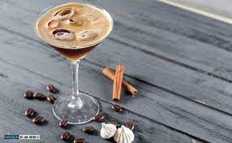

Espresso Martini

Description
The espresso martini is a cold caffeinated alcoholic drink made with
espresso, coffee liqueur, and vodka.
It is not a true martini as it contains neither gin nor vermouth, but is
one of many drinks that incorporate the term martini into their names.
Ingredients
- 100g golden caster sugar
- Ice
- 100ml vodka
- 50ml freshly brewed espresso coffee
- 50ml coffee liqueur
- 4 coffee beans (optional)
Steps
- Put the caster sugar in a small pan over a medium heat and pour in
50ml water. Stir, and bring to the boil.
- Turn off the heat and allow the mixture to cool.
- Put 2 martini glasses in the fridge to chill.
- Once the sugar syrup is cold, pour 1 tbsp into a cocktail shaker along
with a handful of ice, the vodka, espresso and coffee liqueur.
- Shake until the outside of the cocktail shaker feels icy cold.
- Strain into the chilled glasses. Garnish each one with coffee beans if
you like.
Back to home